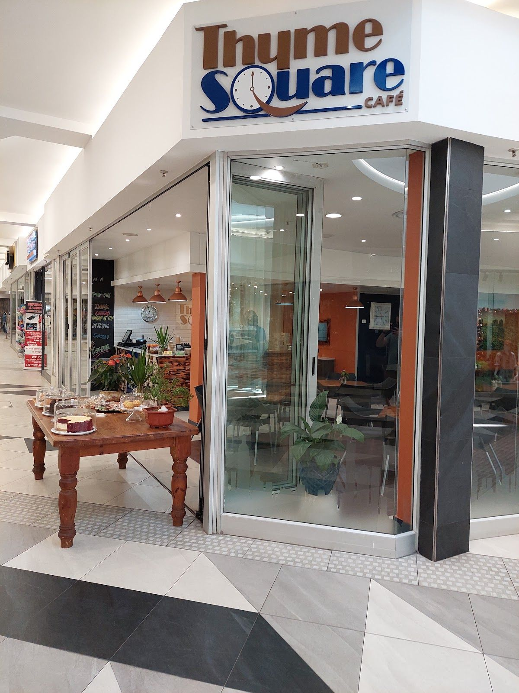
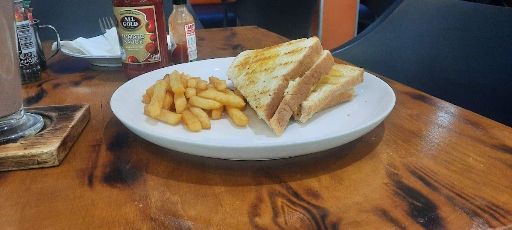
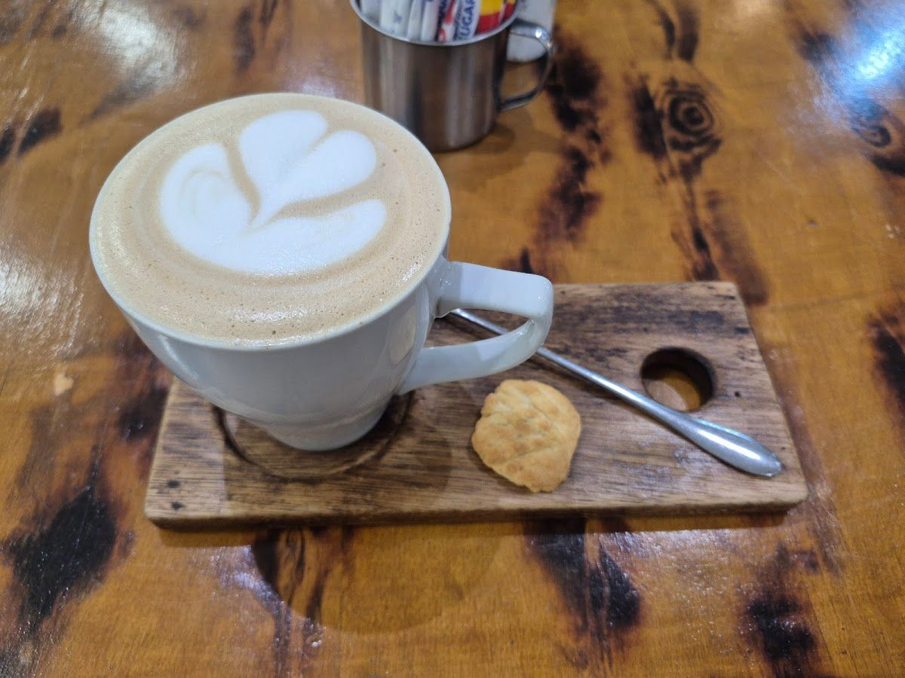
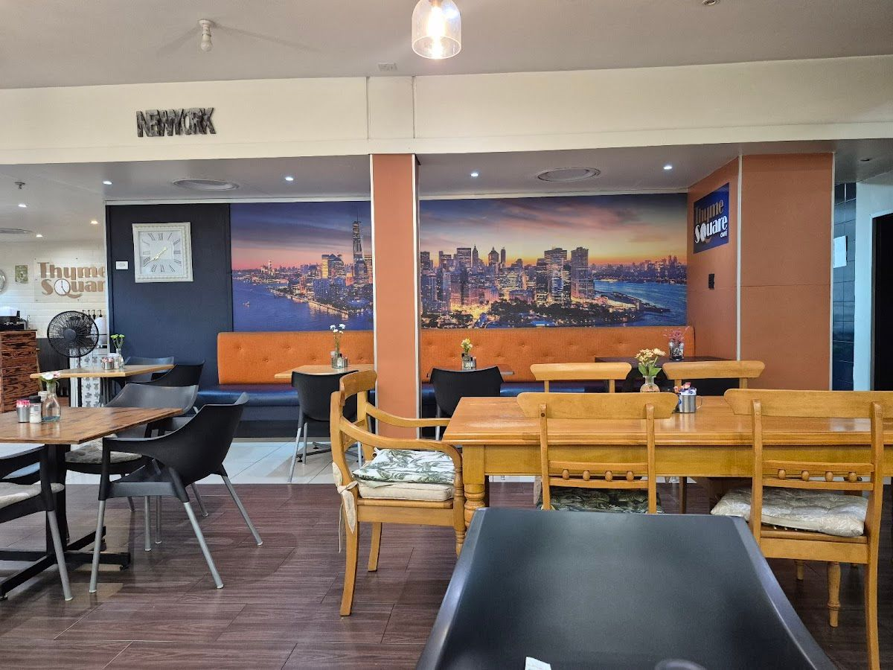

Located in the heart of Johannesburg, Thyme Square Cafe is a warm and inviting coffee shop offering a delightful range of meals and beverages. We cater to locals and visitors alike, welcoming everyone with open arms and a friendly smile.
Our story began with a passion for creating a space where people can enjoy food made from the heart. Over the years, we have grown into a beloved cafe known for its cozy vibe and genuine hospitality. Each dish is crafted with care, reflecting our commitment to quality and taste.
At Thyme Square Cafe, our mission is simple: to bring joy and satisfaction to our customers through delicious food and exceptional service. We promise to always serve meals that are freshly prepared, using the best ingredients to ensure every bite is a moment to cherish.
Explore our delicious offerings, crafted with love and enjoyed by all who visit Thyme Square Cafe.
Food made from love given with joy and enjoyed by all. Our menu features a variety of delightful dishes, ensuring there’s something for everyone.
Here is what our clients say about us.
"Absolutely loved my visit! The place has a cozy vibe, and the owner is so lovely and genuinely involved, checking in and having little chats that make you feel welcome. The staff are great too — friendly, funny, and just all-around pleasant. I had the Eggs Benedict with Spinach and a cappuccino, and both were delicious. Everything just felt really well done, from the food to the coffee to the overall atmosphere. Definitely a place I’d go back to"— Debbie, ⭐⭐⭐⭐⭐
"The service was good and very pleasant. Store front looks clean. Toasted 🥪 sandwich could have been more toasted, thou. Will try the shop again soon"— graeme porter, ⭐⭐⭐⭐
"Went to Thyme Square Cafe for early lunch. The breakfast wrap was divine and Thyme Square also offer bacon alternatives, which is an added bonus. My son's burger was cooked to perfection and the coffee and cake is always good. Thank you for the wonderful service T. We will definitely be back."— Morag De Beer, ⭐⭐⭐⭐⭐
"I was at The Morning Glenn shopping centre and came across Thyme Square Cafe. I ordered a salad and enjoyed it very much. It was fresh, flavourful and very reasonably priced. The waiters were very friendly and efficient. I can recommend visiting them if you are in the centre and feel like a light, quick lunch."— FindsAndFeels, ⭐⭐⭐⭐⭐
"Friendly staff but food was bad. Had an omelette one day, found bacon in it that was not supposed to be there. Also had a steak wrap and the strips were hard and in tiny pieces."— S Mack, ⭐




We'd love to hear from you — reach out to us anytime.